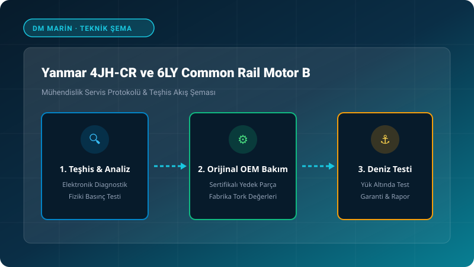

1. Yanmar Common Rail (CR) Architecture & Emission Controls
Yanmar's 4JH-CR and 6LY-CR marine diesel series integrate state-of-the-art electronic fuel management to comply with rigorous EPA Tier 3 and EU RCD 2 emissions mandates. Replacing mechanical distribution pumps with multi-stage high-pressure common rail injection and precision injectors, Yanmar achieves virtually smoke-free acceleration, whisper-quiet idling, and outstanding fuel economy on modern sailing yachts and cruisers.
2. Suction Control Valve (SCV) Wear & Rail Pressure Surging
RPM hunting and uncommanded engine shutdown on Yanmar CR powerplants typically trace to a sticking Suction Control Valve (SCV). Sub-micron water contamination or fuel varnishing causes micro-scoring on the SCV metering spool. Using the Yanmar Diagnostic Tool (YDT), marine technicians record target vs. actual rail pressure waveforms to identify SCV lag before catastrophic pump damage occurs.
3. Common Rail Injector Replacement & IQA QR Calibration
Whenever an injector is replaced on a Yanmar CR engine, its individual 30-digit alphanumeric IQA calibration code must be programmed into the ECU via the YDT interface. Skipping this critical step leads to cylinder-to-cylinder fuel imbalance, rough idling, elevated Exhaust Gas Temperatures (EGT), and potential piston crown thermal fatigue.
4. Yanmar Y-COP Immobilizer & Network Diagnostics
The Yanmar Y-COP electronic immobilizer communicates directly with the engine ECU over encrypted CAN bus architecture. If the transponder fob loses pairing or battery voltage drops below 10.8V during cranking, the ECU prevents fuel injection while allowing starter turnover. Technicians verify bus voltage drop and ground continuity across all weather-pack connectors.
Frequently Asked Technical Questions (FAQ)
❓ What causes RPM hunting at idle on a Yanmar 4JH80?
💡 The primary cause is a sluggish Suction Control Valve (SCV) on the high-pressure fuel pump or restricted fuel filters. Inspect the Racor pre-filter and execute a live pressure graph test with the YDT scanner.
❓ Can Yanmar Common Rail injectors be cleaned on-site?
💡 CR injectors feature sub-micron tolerances; they require specialized calibration bench testing for back-leakage and spray pattern verification. Faulty injectors must be replaced and coded via their 30-digit IQA value.
❓ What is the recommended coolant change interval for Yanmar diesels?
💡 Yanmar Long Life Coolant (LLC) should be flushed and renewed every 2 years or 1,000 engine hours using a 50/50 mix with demineralized water.
Get Certified Marine Engineering Support
Mobile shipyard-grade engineering directly to your marina berth across Istanbul, Bodrum, Marmaris, and Gocek.